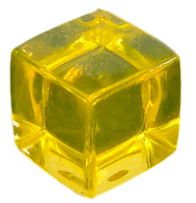

As you can see below, it turns out there are canals on Mars! Imagine you sent your friend Ryan there and wanted to give him a chance at survival. In order to be rescued, he needed to start at the city T on the south pole, travel along the canals visiting each city only once and returning to the starting point in such a way that a sentence is spelled out in english. What sentence must Ryan spell to avoid certian Death?
Text the answer to the CDC organizers along with a selfie. Make sure that you have the proper personel in the photo.